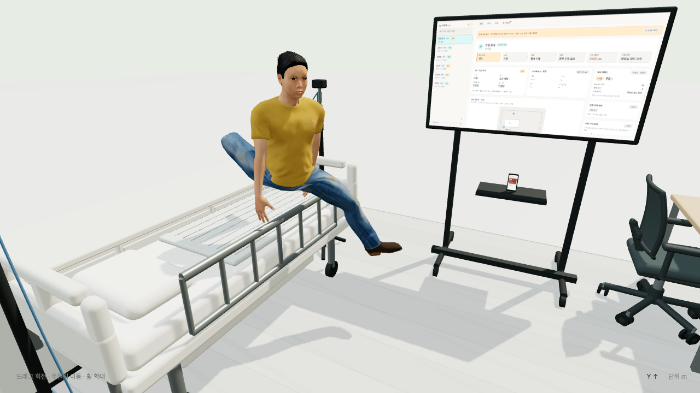

이전 결과 보관본 — 센서 전체 포함 조건 누락으로 추천 제외.
환자의 행동과 감지 화면을 함께.
TV 이동식 스탠드와 카메라만 변경했습니다. 침대·센서·가구·환자 동작은 기존 공간 그대로입니다. 유한 격자 탐색으로 후보를 고르고, 실제 3D 화면을 후보마다 4장씩 캡처했습니다.

실제 시뮬레이터 캡처 · 1280×720 · 아래 단계 버튼으로 전체 후보의 같은 순간을 비교합니다.
TV는 발치, 카메라는 머리맡 반대편.
환자를 화면 왼쪽, 대시보드를 오른쪽에 분리하는 배치입니다. 카메라 높이 1.85m, 수직 화각 57°입니다.
TV 중심은 침대 중심에서 왼쪽 약 1.63m·발치 방향 1.65m. 카메라는 침대 중심에서 왼쪽 약 1.78m·머리 방향 1.60m에 둡니다.
대시보드 투영 크기는 약 442×236px입니다. 화면이 들어온다는 뜻이며, 작은 수치까지 읽힌다는 보장은 아닙니다. 현재 원본 대시보드의 작은 글씨와 보호자 알림은 별도 근접 컷이 필요합니다.
1위 구도로 시뮬레이션 ↗탐색 결과 JSON무엇을 계산했나
TV 12곳 × 카메라 수평 위치 63곳 × 높이 4단계 × 수직 화각 5단계 × 시선 높이 3단계 = 45,360개. TV는 카메라를 향해 수평 회전하며, 크기와 설치 높이는 바꾸지 않았습니다.
| 단계 | 조건과 결과 |
|---|---|
| 카메라 배치 제외 | 고정 가구·환자 동작 영역과 겹침: 15,120개 |
| TV 배치 제외 | TV 부품과 고정 가구·환자 동작 영역의 경계 상자 겹침: 11,280개 |
| 환자 잘림 제외 | 61개 시점의 주요 관절이 여백 밖으로 나감: 16,441개 |
| TV 잘림 제외 | 화면 네 모서리가 프레임 여백 밖으로 나감: 1,879개 |
| 통과 640개 순위화 | 화면 면적·사람 크기 45%, 관절 시선 가림 35%, TV 9개 지점 가림 20%. 가림이 큰 후보는 감점. |
| 중복 구도 축소 | TV 30cm, 카메라 수평 45cm, 높이 30cm 중 하나 이상 차이가 있는 구도를 순서대로 30개 선택. |
점수는 촬영 구도용 휴리스틱입니다. 문헌에서 검증된 척도나 센서 성능 수치가 아닙니다. 16:9 기준이며, 낙상 동작은 기존 연출입니다. 프레임 검사는 0.5초 표본이므로 그 사이의 모든 순간을 보증하지 않습니다. 가림 검사는 경계 상자 근사이며 몸 자체의 가림과 글자 판독은 별도 렌더 확인이 필요합니다. 카메라 지지대는 폭 24cm 기둥으로 근사했으므로 실제 삼각대 다리 폭·촬영자 공간·실측 치수로 현장에서 확인해야 합니다.
받은 피드백을 어떻게 살릴까
| 핵심 | 이 구도로 가능한 부분 / 추가 컷 |
|---|---|
| 센서 3종·설치 위치 | 장비 식별은 별도 근접 컷. mmWave를 메인 화면에 강제로 넣지 않음. 실제 사용한 3종 명칭은 현장 장비와 대조. |
| 사람 + 대시보드 크게 | 30개 구도의 주 평가 기준. 화면 크기 수치를 각 카드에 표시. |
| 대시보드 밝기·가독성 | TV 이동만으로 작은 글씨까지 해결되지는 않음. 화면 노출·반사와 위험 상태 글자 크기를 현장 확인. |
| 정상 → 위험 → 알림 | 같은 고정 구도로 동작을 이어 찍고 자막·내레이션을 대응. 캡처의 시간은 연출 시나리오 시각. |
| 복장·3분 전체 / 30초 데모 | 현재 모델은 모자·마스크 없음. 실제 촬영 복장과 30초 편집은 별도 작업. |
| 보호자 알림·스피커 음성 | 작은 휴대폰을 멀리서 담는 것으로 끝내지 않고, 알림 근접 컷과 실제 스피커 출력음을 추가. |